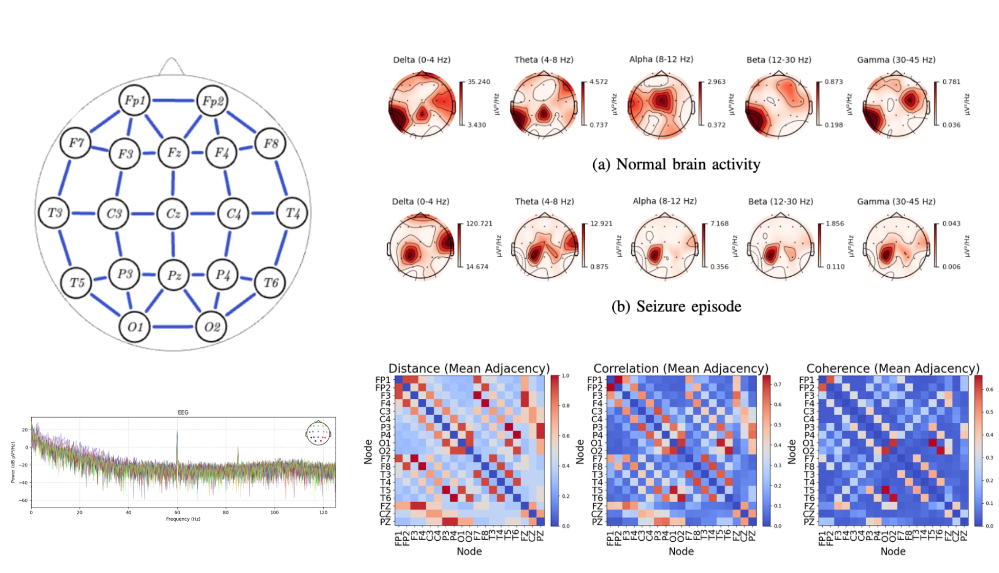
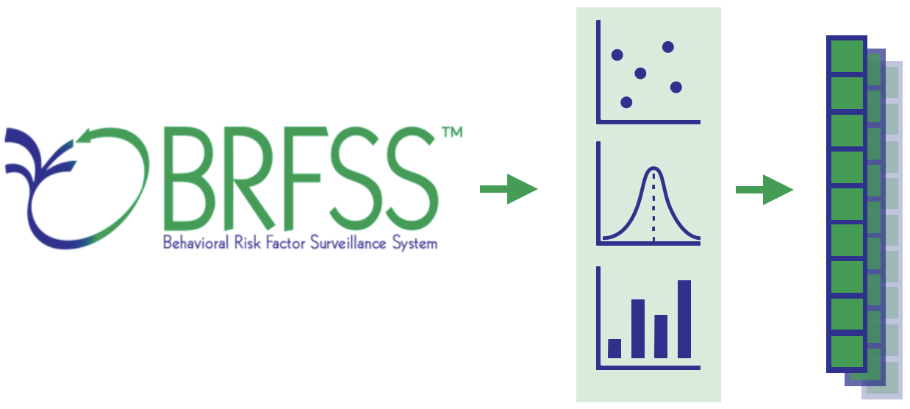

»PROJECTS
Geothermal Heat Pump Simulation

Description: In this project, I created a simulator for a geothermal heat pump cycle. The software simulates fluid flow, heated by heat conduction from the environment to the transfer medium through a generic medium-carrying pipe. The goal is to analyze the dependency on its components and setup.
- Implemented pipe environment in python
- Derived equations for temperature propagation equation along generic paths
- Implemented numerical integration for heat propagation in C
- Integrated a simulation and visualization pipeline in python
ODE-Solver Software

Description: This project is software for a flexible and extendable solver of ordinary differential equations, supporting implicit and explicit methods such as Runge Kutta, Adams Bashforth, and Euler. (img from here)
- Implemented solver polymprphistically in C++ with OOP
- Designed to be easily extendable and customizable
- Used Cmake and Makefile for building
- Used Google Test (gtest) for testing functionality
Aerial Road Segmentation

Description: In this project, we evaluate the performance of various convolutional neural network (CNN) based architectures for road segmentation from aerial imagery.
- Used Hydra and PyTorch
- Implemented U-Net and ResNet architectures
- Fine-tuned pretrained segmentation models
- Experimented with image transformations and patch sizes
Neuronal cell morphology classification

Description: Using Algebraic Topology and Graph Neural Networks in Multi Embedding Fusion Models for classifying neuronal morphologies
- Implemented a multi embedding fusion model for classifying neuronal morphologies using morphoclass, torch and torch_geometric
- Used tools from Persistent Homology (Algebraic Topology) for generating topological representations
- Implemented pipeline for reproduction of state of the art research in classification of neuronal cells using algebraic topology and ML.
- Improved classification w/ proposed embedding fusion model, combining GNN and topology features
Graph based Epilepsy Seizure Detection form EEG-Signal
Description: We used Graph Machine Learning for seizure detection. Experimenting with different models, signal representations and graph construction methods.
- Implemented Feature processing pipeline in pythonn
- Implemented Benchmark Models for multi chanel Timeseries, includign Convolutional and Long-Short-Time-Memory networks
- Improved classification using Graph Neural Networks and Hybrid aproaches.
Feature Engineering on survey data for Heart Attack prediction
Description: Using feature engineering strategies to predict heart attacks form survey data with logistic regression models.
- Implememted Data cleaning, represetation and augmentation pipeline with python and pandas.
- Implemented prediction pipeline with python and pytorch.